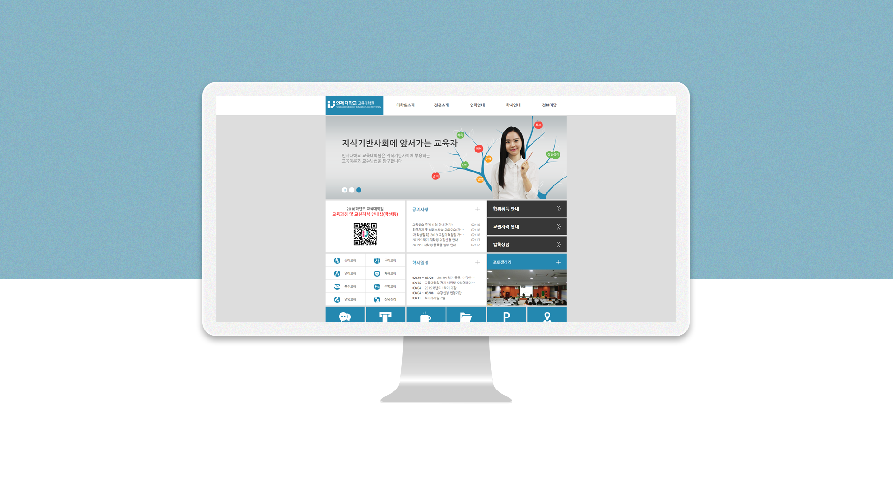
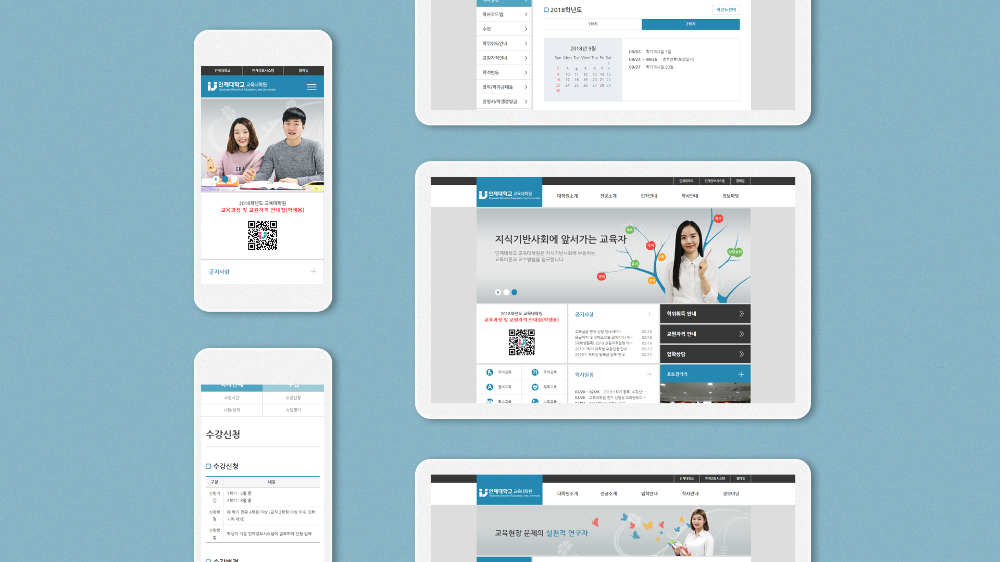

인제대학교 교육대학원
홈페이지 디자인
DATE홈페이지 디자인
2016.01 ROLE
UI / UX Designer
인제대학교 교육대학원의 홈페이지 리뉴얼 디자인입니다.
클라이언트는 인제대학교 홈페이지와 같은 느낌의 다른 레이아웃으로 디자인 하길 원했습니다.
반응형 웹으로 제작되었고 웹표준을 고려하고 메뉴 구성을 나누는 작업에 많은 노력을 했습니다.
VIEW PROJECT
클라이언트는 인제대학교 홈페이지와 같은 느낌의 다른 레이아웃으로 디자인 하길 원했습니다.
반응형 웹으로 제작되었고 웹표준을 고려하고 메뉴 구성을 나누는 작업에 많은 노력을 했습니다.

접속환경에 따라 최적화되는 반응형 웹디자인
PC, 태블릿, 모바일 다양한 디바이스에서 최적화되어 이용할 수 있도록, 반응형 웹으로 디자인 되었습니다.
각각 디바이스마다 동일한 인터페이스로 느낄 수 있게 많은 노력을 했습니다.
각각 디바이스마다 동일한 인터페이스로 느낄 수 있게 많은 노력을 했습니다.
